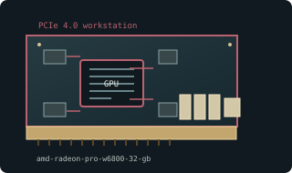

[ WORKSTATION GRAPHICS CARDS // IDENTIFIED COMPONENT ]
AMD Radeon Pro W6800 32 GB
Navi 21 / RDNA 2 professional, 2021. This entry identifies one model or reference configuration; related products and OEM variants are distinguished below.

MODEL / VARIANT: Radeon Pro W6800 is not Radeon RX 6800 XT; professional memory capacity, ECC/workstation drivers, outputs and board power differ. OEM changes should be verified.
Recorded specifications
| Cataloged product | AMD Radeon Pro W6800 32 GB |
|---|---|
| Generation / core | Navi 21 / RDNA 2 professional, 2021 |
| Core & memory | Navi 21; 3840 stream processors; 32 GB GDDR6 with ECC; 256-bit bus; 250 W typical board power. |
| Host interface & I/O | PCI Express 4.0 x16; one 6-pin plus one 8-pin power input on reference; six Mini DisplayPort 1.4 outputs. |
| Variant boundary | Radeon Pro W6800 is not Radeon RX 6800 XT; professional memory capacity, ECC/workstation drivers, outputs and board power differ. OEM changes should be verified. |
| Archival identification | Record full part number, PCB or module revision, BIOS/firmware, device/subsystem IDs, driver version, adapters, physical condition and source-document edition. |
Compatibility, service & archival notes
Product brief values identify W6800 reference board; do not derive specifications from consumer RX 6800 XT.
Verify both power plugs, MiniDP panel, blower and professional driver release; save firmware and certified-app notes. Confirm server/workstation airflow and PSU.
- Check signaling, slot keying, lane width, power pinout, board/module dimensions, case clearance, airflow and PSU requirements for the exact specimen.
- Use drivers supporting its device ID and target OS. Preserve original installer and firmware copies, and record their versions before changes.
- Do not energize boards with corrosion, cracks, damaged connectors, obstructed cooling or suspected shorts; document condition before bench testing.
Manufacturer, model & standards sources
- AMD Radeon Pro W6800 official product specificationsModel/product-history reference; compare the exact card revision and nameplate.
- AMD/ATI legacy product and driver archiveManufacturer or archived product/driver documentation; exact OEM board details may differ.
- PCI Express interface standardHost interface reference; confirm exact physical and electrical compatibility.
- Gear Seekers — A GPU you have never heard of - AMD Radeon Pro W6800Independent video review; treat as supplementary context, not primary manufacturer documentation.
Reference specifications do not supersede the board vendor's manual or nameplate. Performance figures are vendor claims unless explicitly identified as measured.